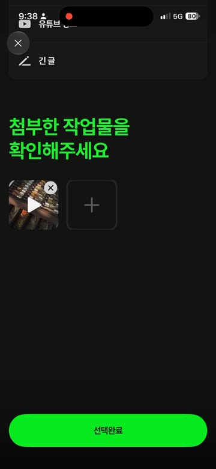
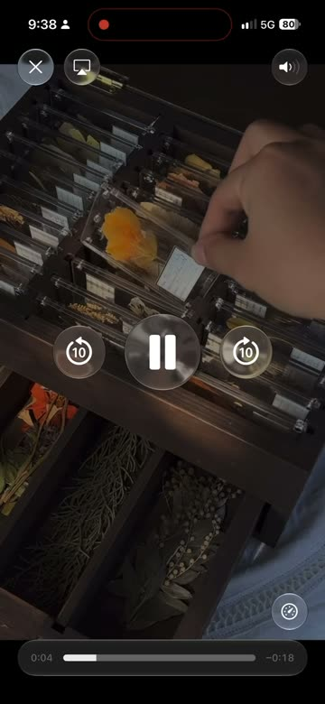

동영상 칸을 누르면 지금처럼 전체 화면 미리보기가 열립니다. 칸 안에는 아무것도 더하지 않고, 썸네일 줄 바로 아래에 「대표 장면 · 바꾸기」 행 하나를 둡니다. 행을 누르면 재생 없이 장면만 고르는 시트가 열립니다.
근거: 실제 앱 녹화(2026-10-07), iOS 최신 개발 소스, 타 서비스 조사, 세 가지 안 비교 심사(iOS 개발·UX 두 관점). v1 시안의 「칸 아래 커버 편집 띠」는 미리보기 탭과 겹쳐서 뺐습니다.
녹화에서 확인한 동작입니다. 90pt 칸을 누르면 시스템 전체 화면 플레이어가 열려 바로 재생되고, 길게 누르면 순서를 바꾸고, 오른쪽 위 X는 삭제입니다. 여기에 「편집」을 하나 더 얹으면 손가락이 닿는 자리가 겹칩니다.
썸네일 줄과 「선택완료」 사이에 공간이 넉넉합니다. 새 행은 여기에 들어갑니다.

시스템 플레이어라서 이 화면에 우리 버튼을 얹기 어렵습니다(공식 문서상 버튼을 올리는 용도가 아님).

숏폼 앱(릴스·틱톡·쇼츠)은 게시 화면의 썸네일이 하나라서 썸네일 자체를 커버 편집으로 씁니다. 우리처럼 여러 칸이 늘어선 작성기(인스타 캐러셀·스레드·X)는 칸 안에 커버 편집을 넣은 사례가 없었고, 핀터레스트처럼 칸 밖의 별도 항목으로 뺍니다.
| 안 | 미리보기와 겹침 | 찾기 쉬움 | 변경 크기 | 심사 결과 |
|---|---|---|---|---|
| A. 칸 안에 「커버 편집」 띠 (v1)유튜브 쇼츠·틱톡 방식 | 겹침90pt 칸에 탭·길게 누르기·X·띠가 몰림 | 좋음 | 작음 | 제외 |
| B. 미리보기 안에 「이 장면으로」 버튼Vimeo·Wistia(데스크톱 웹) | 미리보기가 바뀜시스템 플레이어를 자체 화면으로 교체해야 함 | 미리보기를 열어야 보임 | 큼 | 2/5점대, 탈락 |
| C. 칸 밖 「대표 장면」 행 + 고르기 시트핀터레스트 'Edit cover' 항목 방식 | 겹침 없음칸·미리보기 코드는 손대지 않음 | 좋음지금 장면 미니 썸네일 + 「바꾸기」 글자 | 행 1개 + 시트 1개 | 두 심사 모두 1위 |
왼쪽 화면의 「대표 장면」 행을 누르면 시트가 열립니다. 프레임 줄을 끌어 장면을 바꾸고 「완료」를 눌러 보세요. 칸과 행의 썸네일이 함께 바뀝니다.
칸 썸네일은 0초 대신 자동 장면입니다.
첨부한 작업물을
확인해주세요
min(10초, 길이÷2), 어두우면 다음 후보)으로 바뀝니다.새 컴포넌트는 행 하나뿐이고, 상태는 보조문과 초록 점으로만 구분합니다.
자동 장면이 정상일 때
후보가 모두 기준보다 어두우면 한 단계 강조
초록 점 + 고른 시점
시트 위에 영상 고르는 작은 탭 줄이 생김(아래 그림)
시트 위 작은 썸네일 줄에서 바로 영상을 바꿉니다. 번호는 첨부 칸 순서입니다.
iOS와 Android가 같은 규칙을 씁니다. 서버는 지금처럼 이미지 한 장(thumbnailImage)만 받으므로 바뀌지 않습니다.
| 자동 장면 | 영상을 고른 직후 도는 약 4초 처리 시간에 정합니다. min(10초, 길이÷2) 지점을 먼저 쓰고, 어두우면 길이의 25% → 75% 지점 순으로 넘어갑니다(후보 3개까지만, 대기 시간이 늘지 않게). |
|---|---|
| 행 노출 | 첨부에 동영상이 1개 이상일 때만 보입니다. 사진만 있으면 행이 없어 화면이 그대로입니다. |
| 시트 | iOS는 큰 시트(large detent), Android는 전체 높이 바텀시트. 열면 마지막으로 고른 위치에서 시작합니다. |
| 장면 고르기 | 프레임 줄(약 10장)을 끌면 큰 장면과 시간이 바로 바뀝니다. 끄는 동안은 저화질로, 손을 뗄 때와 「완료」 때만 정확한 프레임으로 다시 뽑습니다(끊김 방지). |
| 순서·삭제 | 칸 순서를 바꿔도 대표 장면은 그 영상을 따라갑니다. 영상을 지우면 그 영상의 대표 장면도 지우고, 동영상이 0개가 되면 행이 사라집니다. |
| 접근성 | 행은 「대표 장면, 바꾸기」로 읽습니다. 프레임 줄은 위아래로 밀 때마다 1초씩 움직이며 「0분 12초」처럼 읽어 줍니다. 버튼은 모두 44pt 이상입니다. |
| 측정 | 행 탭률과 직접 바꾼 비율을 잽니다. 탭률이 아주 낮고 어두운 썸네일 문의도 없으면, 행을 「어두울 때만 보이기」로 줄입니다. |